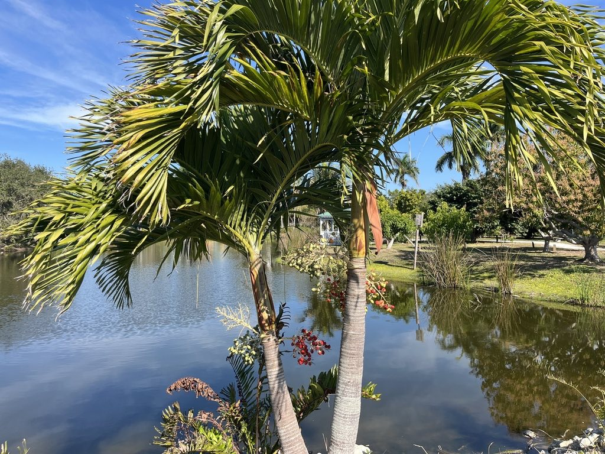

- The name has nothing to do with December. It comes from the fruit: the clusters of glossy red drupes that ripen in late fall and early winter make the tree look as though someone strung it with ornaments — check the March 2026 photo in the gallery to see just how striking they are. Time your visit right and you will see why the name stuck.
- The genus name Adonidia means 'little Adonis' — a nod to the palm's compact but handsome proportions, not a claim to mythological grandeur.
- The species epithet merrillii honors a monumental and tragic chapter in botanical history. Elmer Drew Merrill arrived in Manila in 1902 and spent twenty-two years building a herbarium of 275,000 specimens from nothing — only to have the entire collection destroyed during the Japanese occupation in World War II. His name survives in taxonomy on thousands of species, including this one.
- Often called the Dwarf Royal Palm, this species earns that nickname through a precise growth strategy: it shoots upward quickly to about six feet, then shifts into an exceptionally slow vertical crawl for the rest of its life. That early sprint followed by a near-halt is exactly what lets it hold the clean, upright proportions of a Royal Palm on a fraction of the footprint — for decades.
The Christmas Palm is endemic to the Philippines, where it grows in coastal and lowland tropical forest — it has been particularly documented from Palawan and nearby islands. It has been cultivated throughout the Philippine archipelago and across the world's tropics for many centuries, well before Western botanists formally named it.
Italian botanist Odoardo Beccari first described the species in 1909, placing it in the genus Normanbya; he reclassified it into the monotypic genus Adonidia in 1919. It arrived in Florida horticulture as part of the broader 20th-century enthusiasm for tropical palms and is now one of the most commonly planted ornamental palms in South and Central Florida.
- The species epithet merrillii is a tribute to Elmer Drew Merrill, who arrived in Manila in 1902 as botanist to the Philippine Bureau of Agriculture and spent twenty-two years there cataloguing a flora that was barely known to science. When he left, the herbarium he had built from nothing held more than 275,000 mounted specimens.
- That collection was destroyed during World War II, but Merrill — by then at Harvard — worked to rebuild it from duplicates he had sent abroad.
- In Florida the Christmas Palm comes with a genuine caution for growers: lethal yellowing, a disease caused by a phytoplasma (a bacterium without a cell wall), has significantly reduced the popularity of this species in the state. The pathogen causes successive leaves to brown and die, working inward toward the growing tip until the palm is lost — usually within a few months of first symptoms.
- The disease has historically been concentrated in South Florida, but UF/IFAS records its first appearance in Manatee County in 2007, which puts this park squarely within the zone where vigilance is warranted.
- Despite that vulnerability, the Christmas Palm remains a practical choice where space is tight. It is self-cleaning — dead fronds detach on their own — and it is well adapted to Florida's typically nutrient-poor sandy soils, requiring little supplemental fertilizer under normal conditions. Its moderate salt tolerance also suits it to coastal Central Florida landscapes like Bradenton's.
The inflorescences — branched cream-to-yellow flower stalks that emerge from below the crownshaft — produce small flowers that attract pollinating insects. Because the palm is monoecious, both male and female flowers appear on the same tree, so every individual can set fruit without a nearby pollen source.
The real draw for wildlife is the fruit. The clusters of bright red ovoid drupes that ripen in late fall and winter are taken by birds and small mammals, which disperse the seeds. In its native Philippine coastal forests, this seed-dispersal relationship is a meaningful part of the palm's regenerative ecology.
In Florida cultivation, birds similarly forage the fruit, though the palm has not established invasive populations in natural areas and is not flagged as an ecological concern.
Branched inflorescences of small cream-to-yellow flowers emerge from below the crownshaft. The palm is monoecious — both male and female flowers appear on the same tree — so a single specimen can set fruit without cross-pollination. Flowering can occur across much of the year, with a general peak in warmer months.
Clusters of ovoid drupes about one inch long that ripen from green to glossy scarlet in late fall and early winter, giving the tree its common name. Each fruit contains a single seed. The fruit is not edible.
Pinnately compound, arching, and bright green, reaching roughly four to five feet in length. The leaflets are narrow, stiffly arranged in a V-shape along the rachis, and slightly jagged at the tip. Fronds shed cleanly on their own as they age, keeping the tree tidy without pruning.
A smooth, green crownshaft sits at the top of the trunk — the point from which all fronds emerge and the clearest visual landmark on the tree. The trunk is solitary, slender (five to six inches in diameter at maturity), gray to tan, and marked by neat horizontal rings where old fronds have dropped.
Trees are often planted in groups of two to four to create a multi-stemmed effect, their trunks naturally bowing outward.
Start at the crownshaft — the smooth green cylinder just below the fronds that is characteristic of this group of palms.
Then look at the fruit: if the tree is in season (late fall through winter), the bright red clusters hanging below the crownshaft are unmistakable. Run your eye down the trunk and notice how neatly the ring scars line up where each frond once attached — no ragged bases, no persistent dead fronds.
Finally, if you see a group of two or three trees planted together with gently outward-leaning trunks, look closely at the soil line: those are independent, single-trunked individuals that a grower potted together to create an architectural silhouette this strictly solitary species could never produce on its own.
It is one of the most common nursery conventions in South Florida landscaping, and knowing it changes how you read every multi-trunk planting you encounter.
The fruit is not a food source — the flesh is minimal and not palatable — but it is not toxic to people, dogs, or cats. The palm is otherwise harmless to handle; no spines, irritating sap, or skin hazards are associated with this species.
Gardeners in Manatee County and nearby areas should be aware of lethal yellowing disease, which was first recorded in Manatee County in 2007. The disease — caused by a phytoplasma spread by a planthopper insect — is incurable, and affected palms typically die within a few months of showing symptoms.
Preventive trunk injections of oxytetracycline are the standard management tool for high-value specimens; consult UF/IFAS Extension for current guidance.
Container plants are commonly sold with two or three individual stems potted together, giving the impression of a naturally clustering palm. This is a nursery convention, not a growth form the species produces on its own — Adonidia merrillii is strictly single-trunked.


- © elurding (CC-BY-NC), via iNaturalist
- © jsea (CC-BY-NC), via iNaturalist
- © Randall Carter (CC-BY-NC), via iNaturalist